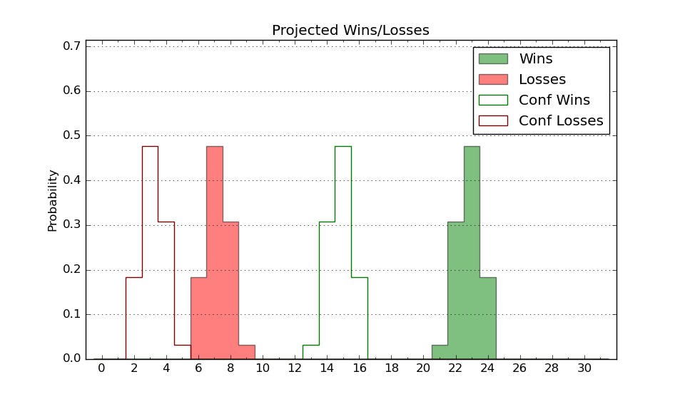

| Home | Game Probabilities | Conferences | Preseason Predictions | Odds Charts | NCAA Tournament |
| City: | Boise, Idaho | |
| Conference: | Mountain West (1st)
| |
| Record: | 13-2 (Conf) 21-6 (Overall) | |
| Ratings: | Comp.: 17.8 (32nd) Net: 17.8 (32nd) Off: 107.6 (95th) Def: 89.8 (12th) SoR: 80.5 (31st) |
| Remaining | ||||||
|---|---|---|---|---|---|---|
| Date | Opponent | Win Prob | Pred. | |||
| 2/26 | @ UNLV (95) | 56.2% | W 65-63 | |||
| 3/1 | Nevada (129) | 87.9% | W 75-61 | |||
| 3/5 | @ Colorado St. (36) | 37.3% | L 65-68 | |||
| Previous | Game Score | |||||
| Date | Opponent | Win Prob | Result | Off | Def | Net |
| 11/9 | Utah Valley (115) | 86.0% | W 76-56 | 5.8 | 5.6 | 11.3 |
| 11/13 | @UC Irvine (110) | 61.7% | L 50-58 | -18.0 | -0.1 | -18.2 |
| 11/18 | (N) St. Bonaventure (86) | 66.7% | L 61-67 | -4.7 | -14.2 | -18.9 |
| 11/19 | (N) Temple (113) | 75.9% | W 82-62 | 28.0 | -10.3 | 17.7 |
| 11/21 | (N) Mississippi (101) | 72.5% | W 60-50 | -13.0 | 17.4 | 4.4 |
| 11/26 | Cal St. Bakersfield (276) | 96.7% | L 39-46 | -52.5 | 5.2 | -47.3 |
| 11/30 | Saint Louis (58) | 73.2% | L 82-86 | 5.6 | -20.3 | -14.7 |
| 12/3 | Tulsa (152) | 90.6% | W 63-58 | -16.8 | 0.9 | -15.9 |
| 12/7 | @Cal St. Northridge (315) | 93.2% | W 74-48 | 7.8 | 9.3 | 17.1 |
| 12/10 | Prairie View A&M (293) | 97.1% | W 97-60 | 3.8 | 7.4 | 11.2 |
| 12/14 | Santa Clara (78) | 77.0% | W 72-60 | -4.8 | 9.8 | 5.0 |
| 12/22 | @Washington St. (49) | 40.5% | W 58-52 | -2.8 | 19.1 | 16.3 |
| 12/28 | Fresno St. (60) | 73.4% | W 65-55 | 12.4 | 0.2 | 12.6 |
| 1/12 | @Nevada (129) | 68.2% | W 85-70 | 11.5 | 1.6 | 13.1 |
| 1/15 | @New Mexico (155) | 74.2% | W 71-63 | 2.2 | 0.1 | 2.3 |
| 1/18 | Air Force (262) | 96.3% | W 62-56 | -9.2 | -10.6 | -19.8 |
| 1/20 | @Utah St. (54) | 43.1% | W 62-59 | -3.2 | 6.5 | 3.3 |
| 1/22 | @San Diego St. (34) | 35.7% | W 42-37 | -17.1 | 33.7 | 16.7 |
| 1/25 | Wyoming (52) | 70.8% | W 65-62 | -2.2 | -2.9 | -5.1 |
| 1/28 | @Fresno St. (60) | 44.7% | W 68-63 | 11.0 | 5.0 | 15.9 |
| 2/3 | @Wyoming (52) | 41.6% | L 65-72 | 4.0 | -12.8 | -8.8 |
| 2/5 | San Jose St. (302) | 97.3% | W 76-60 | -6.8 | -6.4 | -13.2 |
| 2/11 | UNLV (95) | 81.4% | W 69-63 | 6.4 | -7.7 | -1.2 |
| 2/13 | Colorado St. (36) | 67.0% | L 74-77 | 3.5 | -19.7 | -16.1 |
| 2/16 | @Air Force (262) | 88.3% | W 85-59 | 35.6 | -11.1 | 24.5 |
| 2/19 | Utah St. (54) | 72.0% | W 68-57 | 3.8 | 8.9 | 12.7 |
| 2/22 | San Diego St. (34) | 65.4% | W 58-57 | 0.9 | -11.5 | -10.6 |
| Stats & Trends | |||||
|---|---|---|---|---|---|
| Current | Day | Week | Month | Season | |
| Composite | 17.8 | +0.0 | +0.3 | +0.6 | +4.4 |
| Comp Rank | 32 | -1 | +2 | +5 | +49 |
| Net Efficiency | 17.8 | +0.0 | +0.3 | +0.3 | -- |
| Net Rank | 32 | -1 | +2 | +5 | -- |
| Off Efficiency | 107.6 | +0.0 | +0.3 | +3.1 | -- |
| Off Rank | 95 | -3 | +2 | +35 | -- |
| Def Efficiency | 89.8 | -0.0 | -0.0 | -2.7 | -- |
| Def Rank | 12 | +1 | +2 | -2 | -- |
| SoS Rank | 72 | -- | +2 | -12 | -- |
| Exp. Wins | 22.8 | -0.0 | +0.6 | +1.0 | +3.7 |
| Exp. Conf Wins | 14.8 | -0.0 | +0.6 | +1.0 | +3.2 |
| Conf Champ Prob | 92.2 | +7.0 | +38.7 | +35.8 | +80.0 |

| Advanced Stats | ||
|---|---|---|
| Stat | Value | Rank |
| Off Eff FG % | 0.526 | 82 |
| Off Ast Ratio | 0.135 | 214 |
| Off ORB% | 0.323 | 69 |
| Off TO Rate | 0.157 | 127 |
| Off FT Ratio | 0.372 | 34 |
| Def Eff FG % | 0.459 | 47 |
| Def Ast Ratio | 0.107 | 7 |
| Def ORB% | 0.211 | 3 |
| Def TO Rate | 0.186 | 56 |
| Def FT Ratio | 0.238 | 44 |